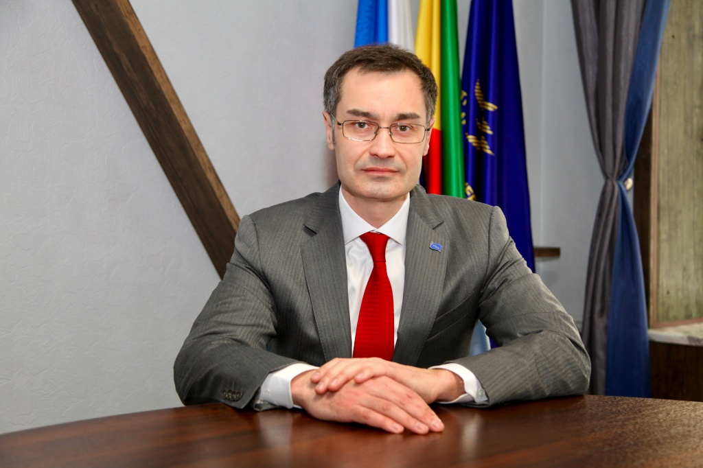
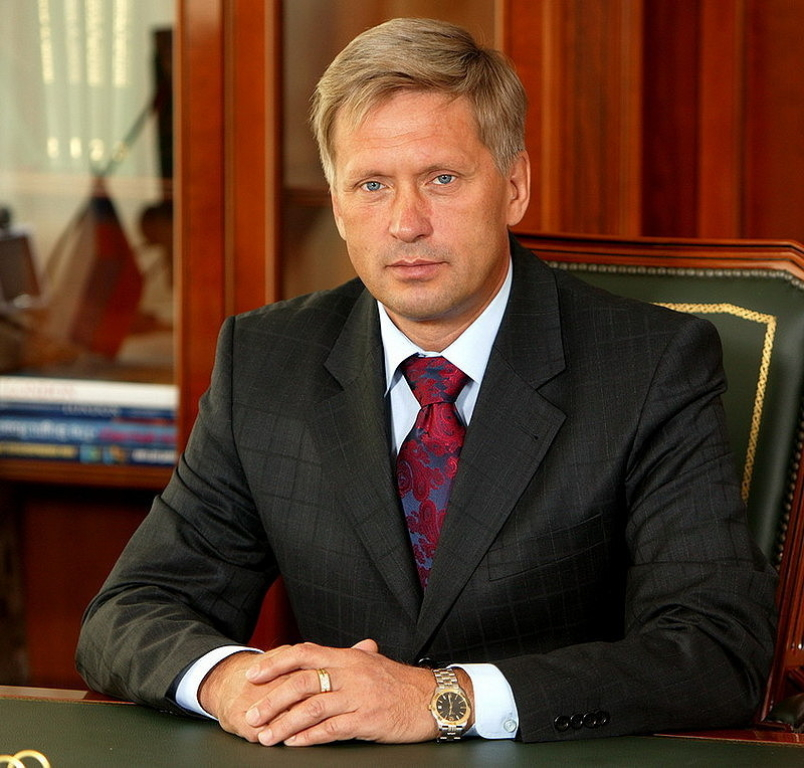
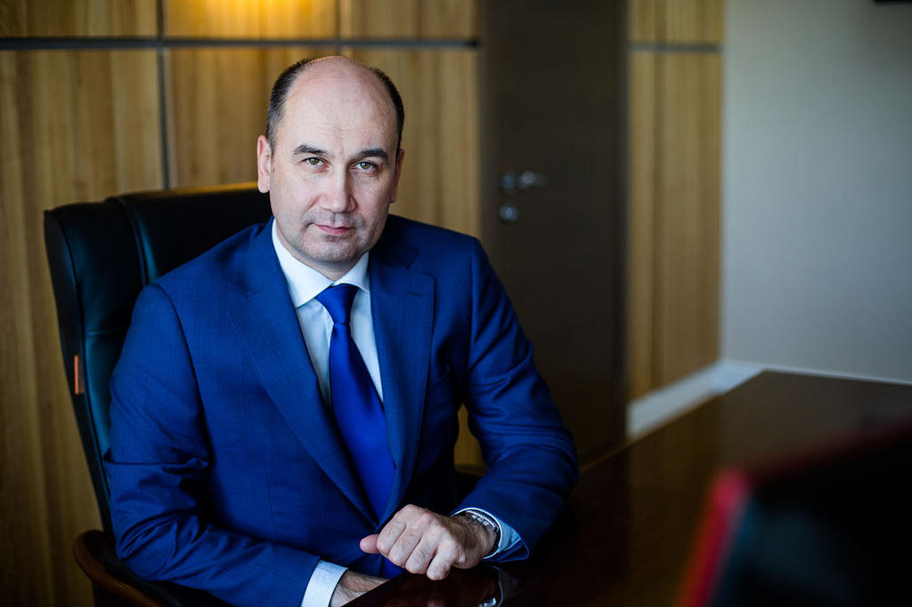

Публичное акционерное общество "Территориальная генерирующая компания №14"> создано 7 декабря 2004 года.
Главная цель создания компании - эффективная работа на конкурентном оптовом рынке электроэнергии и в сфере теплоснабжения потребителей Забайкальского края и Республики Бурятия. Компания одной из первых ТГК России начала свою операционную деятельность. В 2006 году было завершено преобразование Общества в полноценную генерирующую компанию.
ПАО "ТГК-14" обеспечивает тепловой энергией потребителей на территории Забайкальского края и Республики Бурятия - субъектов Российской Федерации, входящих в состав Дальневосточного федерального округа. В составе ПАО "ТГК-14" 7 ТЭЦ, 2 энергетических комплекса с установленной электрической мощностью 649,57 МВт и тепловой мощностью 3 120,77 Гкал/ч.
На сегодняшний день 92,2053 % акций принадлежит АО «Дальневосточная управляющая компания» и 7,7947 % - другие юридические и физические лица.
Действующий генеральный директор ТГК-14
Александр Николаевич Николаенко
Бывшие генеральные директора "ТГК-14"
 Публичное Акционерное Общество «Территориальная генерирующая компания №14», (далее ПАО «ТГК-14») является производителем и поставщиком тепловой и электрической энергии (мощности) в Забайкальском крае и Республике Бурятия.
Настоящая Политика в области качества ПАО «ТГК-14» базируется на миссии Общества, состоящей в надежном обеспечении тепловой и электрической энергией потребителей.
Цели в области качества: бесперебойное и надежное производство и поставка тепловой и электрической энергии, выполнение социально важных задач, обеспечение удовлетворения общественных потребностей в тепловой и электрической энергии и получение устойчивой прибыли для дальнейшего роста экономического состояния Общества.